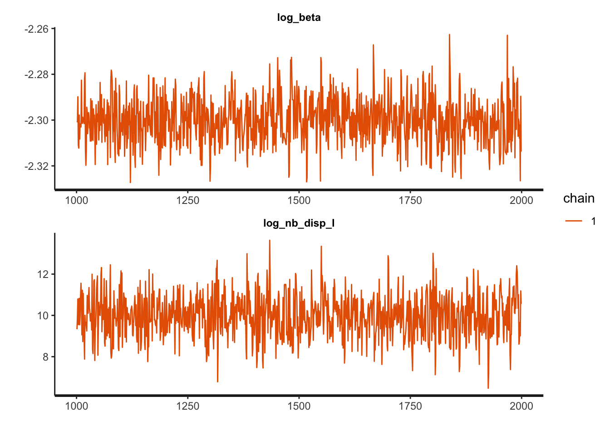

14 TMB Engine
The initial engine for calibrating and forecasting in McMasterPandemic was R itself. In the refactored version of McMasterPandemic we use template model builder, or TMB. It is possible to interact with TMB objects directly using the McMasterPandemic::tmb_fun function, which we illustrate in this section to do MCMC simulation.
HACK: For some reason tmbstan is not working unless we compile the C++ code rather than use the package-compiled objects.
cpp_dir = system.file('tmb', options()$MP_flex_spec_version, package = "McMasterPandemic")
set_spec_version(options()$MP_flex_spec_version, cpp_dir, use_version_directories = FALSE)## [1] "0.2.1"We can get the TMB object by calling the tmb_fun function on a flexmodel_to_calibrate object.
We can pass this tmb_fun object to tmbstan (in the tmbstan package) to generate MCMC samples using rstan.
##
## SAMPLING FOR MODEL 'tmb_generic' NOW (CHAIN 1).
## Chain 1:
## Chain 1: Gradient evaluation took 0.000331 seconds
## Chain 1: 1000 transitions using 10 leapfrog steps per transition would take 3.31 seconds.
## Chain 1: Adjust your expectations accordingly!
## Chain 1:
## Chain 1:
## Chain 1: Iteration: 1 / 2000 [ 0%] (Warmup)
## Chain 1: Iteration: 200 / 2000 [ 10%] (Warmup)
## Chain 1: Iteration: 400 / 2000 [ 20%] (Warmup)
## Chain 1: Iteration: 600 / 2000 [ 30%] (Warmup)
## Chain 1: Iteration: 800 / 2000 [ 40%] (Warmup)
## Chain 1: Iteration: 1000 / 2000 [ 50%] (Warmup)
## Chain 1: Iteration: 1001 / 2000 [ 50%] (Sampling)
## Chain 1: Iteration: 1200 / 2000 [ 60%] (Sampling)
## Chain 1: Iteration: 1400 / 2000 [ 70%] (Sampling)
## Chain 1: Iteration: 1600 / 2000 [ 80%] (Sampling)
## Chain 1: Iteration: 1800 / 2000 [ 90%] (Sampling)
## Chain 1: Iteration: 2000 / 2000 [100%] (Sampling)
## Chain 1:
## Chain 1: Elapsed Time: 2.22979 seconds (Warm-up)
## Chain 1: 1.46374 seconds (Sampling)
## Chain 1: 3.69353 seconds (Total)
## Chain 1:names(sir_obs_err_stan) = c(
names(tmb_params_trans(sir_obs_err_to_calibrate)),
"log_posterior"
)
traceplot(sir_obs_err_stan, ncol = 1)
## Inference for Stan model: macpan.
## 1 chains, each with iter=2000; warmup=1000; thin=1;
## post-warmup draws per chain=1000, total post-warmup draws=1000.
##
## mean se_mean sd 2.5% 25% 50% 75% 97.5%
## log_beta -2.30 0.00 0.01 -2.32 -2.31 -2.30 -2.29 -2.28
## log_nb_disp_I 9.99 0.04 1.05 7.95 9.29 9.99 10.72 12.00
## log_posterior -802.65 0.05 1.07 -805.32 -803.08 -802.34 -801.91 -801.66
## n_eff Rhat
## log_beta 758 1
## log_nb_disp_I 740 1
## log_posterior 531 1
##
## Samples were drawn using NUTS(diag_e) at Wed Jul 27 19:48:05 2022.
## For each parameter, n_eff is a crude measure of effective sample size,
## and Rhat is the potential scale reduction factor on split chains (at
## convergence, Rhat=1).One may also use shinystan with these objects.